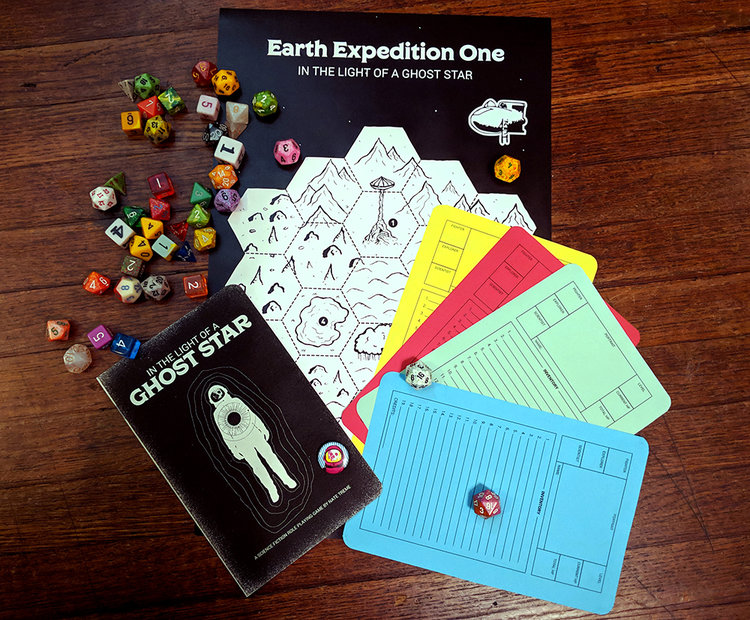

The cult tabletop game of gonzo scifi adventure is getting reprinted! The first run was printed and assemble in my living room and sold out almost immediately. It has gone on to reach 40,000 downloads in digital format but will now being available again physically for the first time in four years. Meet robots, battle apes, cockroach scientist and more!
 Earth was abandoned ages ago during the red giant expansion. Now, dimly lit by the ghost light of a dead white dwarf, it lies layered with eons of forgotten civilizations. From the warmth of Martian reactor cities, scavengers hire illegal transportation to earth to delve into its depths, looking for ancient treasures. There they must deal with ghosts, machines, and the strange life that has evolved on humankind’s abandoned home planet. In The Light Of A Ghost Star is a rules-lite system and setting for science fiction roleplaying. It comes with a hex crawl adventure and random tables that can also be used with other RPG systems. Ghost Star was designed to be quick and easy to play. It’s perfect for one shot games and short campaigns. Characters can be created quickly and can die even quicker!